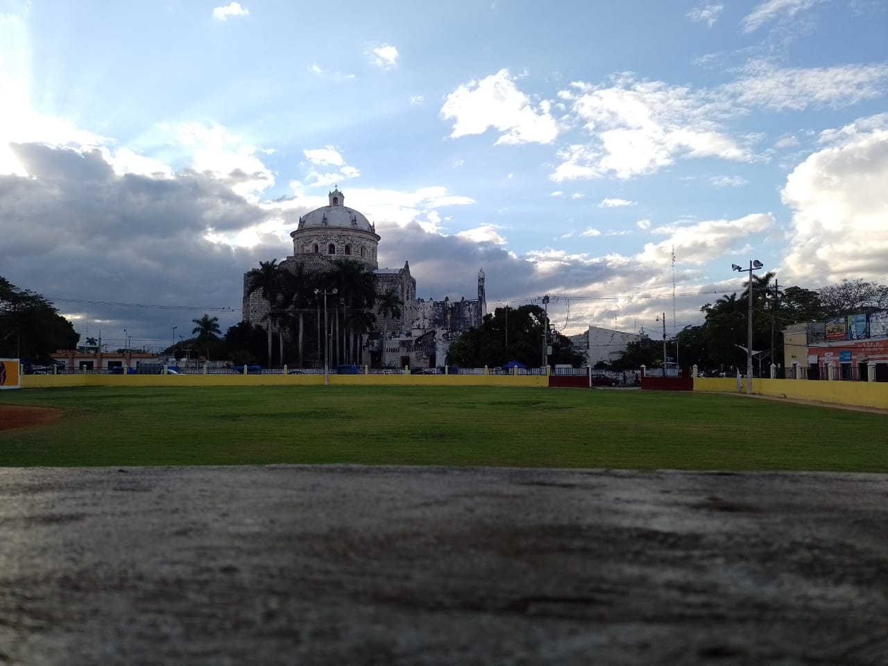

AUTOBIOGRAFIA PASATIEMPO PELICULAS FAVORITAS MUSICA FAVORITA PAGINAS MATERIAS
desde pequeña he sido de las personas que le gusta participar en las actividades de la escuela, empece a estudiar a los tres años en el preescolar, cuando pase al kinder sufri un accidente en el cual lleve una fractura en el pie, por esa razon deje el baile por un tiempo, cuando estaba en tercero de kinder fui la reina del carnaval, mi familia fue a verme y es un recuerdo importante en mi vida. en la primaria fui parte del coro, nos llevaron a otros lugares para presentarnos. cuando pasea a la secundaria hice muchos amigos, en especial una de otro pueblo, nos volvimos muy cercanas por mucho tiempo, antes de cursar primero de secundaria ella se cambio a una escuela de donde ella vive, perdimos comunicacion despues de eso, yo continue en la escuela, empece a llevarme con mas personas y practicar de nuevo el baile, para la salida de la secundaria bailamos charlesthon y mambo.
PASATIEMPO
PELICULAS

MUSICA FAVORITA
PAGINAS